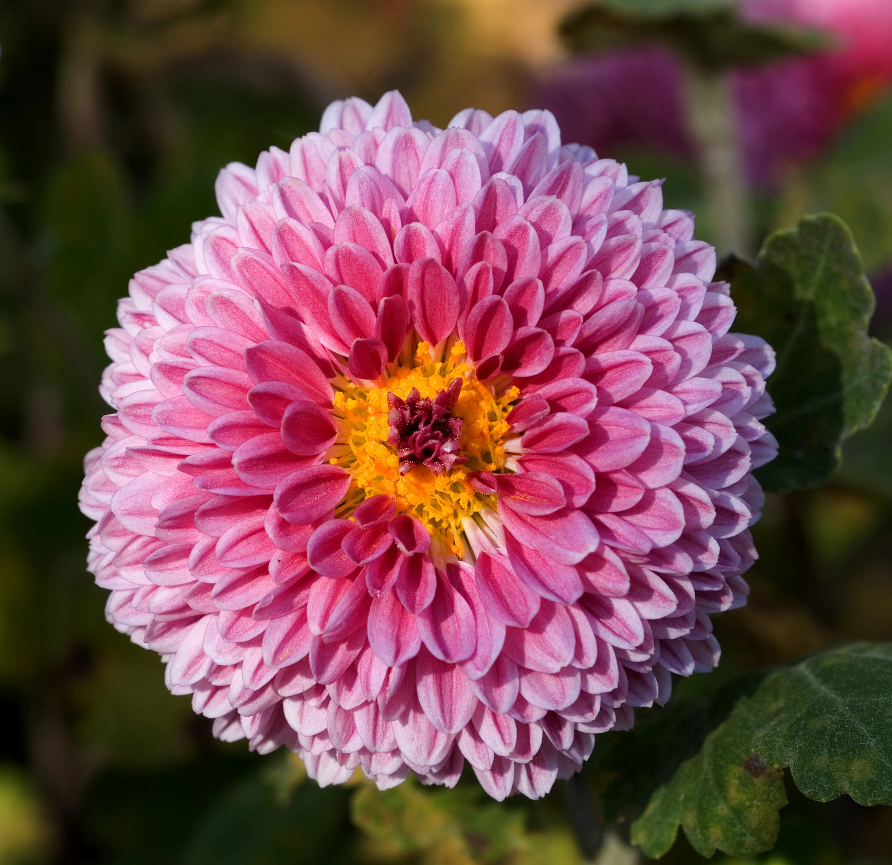

Chrysanthemum
Chrysanthemums, often referred to as mums or chrysanths, are popular flowering plants prized for their vibrant and colorful blooms. They come in a wide range of colors, shapes, and sizes, making them versatile additions to gardens, borders, and containers. Here's a comprehensive guide on chrysanthemums, including their types, planting procedure, and care.
Types of Chrysanthemums:
- Garden Mums: These are the most common type of chrysanthemums grown in gardens and landscapes. They come in a wide range of colors and flower forms.
- Florist Mums: These chrysanthemums are bred for their large, showy blooms and are often used in floral arrangements and bouquets.
- Hardy Mums: Also known as Korean mums or football mums, these chrysanthemums are bred for their cold-hardiness and are suitable for perennial garden beds.
- Planting Procedure:
- Spring or Fall: Chrysanthemums can be planted in spring after the danger of frost has passed or in fall before the first frost. Planting in the fall allows the roots to establish before winter.
- Chrysanthemums prefer full sun but can tolerate partial shade. Plant them in a location with at least 6 hours of sunlight per day for optimal flowering.
- Soil: Chrysanthemums thrive in well-drained soil with a pH level between 6.0 and 7.0. Amend heavy or clay soils with organic matter such as compost to improve drainage.
Weather in Kathmandu
Temperature: °C
Humidity: %
Condition:
Date & Time: